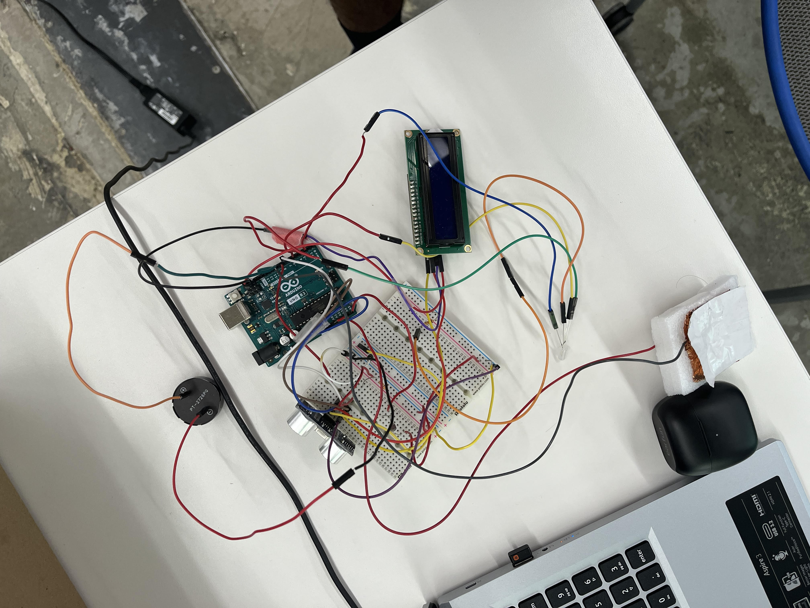

<br>
#### Week 6: Electronic Inputs
<html>
<div class="myDiv" style><h3>Week 6: Electronic Inputs</h3></div>
<div class="vidDiv">
<div class="myDiv">
<h2>The Ultrasonic ++</h2>
</div>
<img src = "https://raw.githubusercontent.com/SaiDBod/PHYS-S12-IntroToDigitalFabrication/main/06_E-Input/picsw6w7/IMG_4391.jpg" width= 400px alt = 06_EINPUT>
<img src = "https://raw.githubusercontent.com/SaiDBod/PHYS-S12-IntroToDigitalFabrication/main/06_E-Input/picsw6w7/IMG_4389.jpg" width= 400px alt = 06_EINPUT>
<img src = "https://raw.githubusercontent.com/SaiDBod/PHYS-S12-IntroToDigitalFabrication/main/06_E-Input/picsw6w7/IMG_4388.jpg" width= 400px alt = 06_EINPUT>
<img src = "./IMG-Soap.jpg" width = 500px alt = 06_Soap>
<div class="myDiv">
For the Ultrasonic Sensor, Both the GND and VCC ports were connected to Ground and 5V pin respectively on the Arduino UNO. The two middle pins of the sensor called "Echo" and "Trig" responsible for the function of the Ultrasonic Sensor.
<img src="./picsw6w7/IMG-FunctionUltrasonic.png" width=500px><img src ="./picsw6w7/Schema1.png" width = 500px>
<br> The Trig Sends the Ultrasonic pulse and The Echo receives this pulse after it echoes off an object. So each of these pins must be connected to one of the PWM pins. In this case, they are connected to pins 7 & 8. Afterward, the Sensor must be coded for it to function.
</div>
<img src = "./picsw6w7/Schema2.jpg" height=400px>
<img src = "./IMG-UltrasonicGraph.png" height= 300px>
<div class="myDiv">
The LCD with an I2C can also be added as an output to display values like the distance measured by the Ultrasonic Sensor. Simply connect the respective SDA and SCL pins to the Arduino and the supply Power through VCC → 5V and GND → Ground. <br><br> The Above graph shows the proportional relationship between the Arduino values for distance and the in-real-life value in mm
</div>
<div><video height="500" controls>
<source src="./IMG_4432.mp4" type=video/mp4>
</video></div>
<div class="myDiv">
The above video clearly shows all the wiring and how the Ultrasonic Sensor works without the LCD.
</div>
<img src = "https://raw.githubusercontent.com/SaiDBod/PHYS-S12-IntroToDigitalFabrication/main/06_E-Input/picsw6w7/IMG_4466.jpg" width= 400px alt = 05_Joint>
<img src = "https://raw.githubusercontent.com/SaiDBod/PHYS-S12-IntroToDigitalFabrication/main/06_E-Input/picsw6w7/IMG_4469.jpg" width= 400px alt = 05_Joint>
<img src = "https://raw.githubusercontent.com/SaiDBod/PHYS-S12-IntroToDigitalFabrication/main/06_E-Input/picsw6w7/IMG_4471.jpg" width= 400px alt = 05_Joint>
<div class="myDiv">
Similar to the capacitor made in class, I also made a capacitor that senses force. Using Copper Tape that is attached to the wires on either side of the foam and the alumnimum foil above the copper tape, The capacitor was made. This capacitor was then attached to an Analog Pin (A0) and a PWM pin (10). Then using the analogRead Function and more formulas, the weight in grams can be measured.
</div>

<img src = "https://raw.githubusercontent.com/SaiDBod/PHYS-S12-IntroToDigitalFabrication/main/05_3DPrinting/w5images_3D/JointCADstep9.png" width= 500px alt = 05_Joint>
<div class="myDiv">
Actual distance between the ultrasonic sensor and an object is directly proportioanal to the Arduino values it gives. However, the sensor only works best between 20 mm to 2000 mm, under 20 mm and it doesn't function properly, over 2000 mm and it does the same thing
<br><br>
The SDA and SCL pins on the Arduino are connected to the SDA and SCL pins of the I2C LCD. The 5 volts was grounded and the buzzer was connected to an analog pin () and PWN pin (11). The rest of the items and wires are from Week 7.
</div>
</div><br>
<div class="vidDiv">
<div class="myDiv">
<h2>What did I learn?</h2><br>
<h5> I learned how to make a capacitor and make complex sensor systems. </h5><br>
</div>
<br>
<div class="myDiv">
<h2>What can I do better next time?</h2><br>
<h5>Next time, I should be more organized with my time and wiring in order to make it easy to understand at a glance. </h5><br>
</div>
</div>